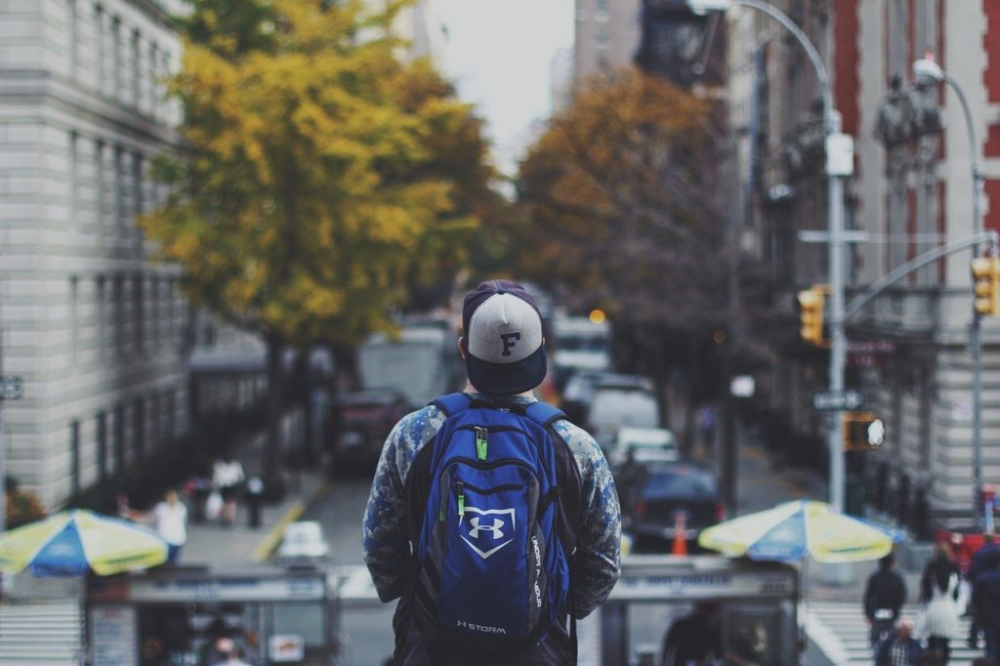

Gammeldags Flødeis

For my 1. semester examens project I was tasked with creating a campaign site for the danish ice cream brand Gammeldags Flødeis. This project was an individual project, so I have been through every process on my own.
Project length: about 3 weeks
Project finished: early June 2020
The street interview challenge
The thing I probably remember the best from this project, was how I challenged myself to stop random people on the street and ask if they wouldn’t mind answering a few questions about their ice cream habits if they had one. Considering I have struggled to talk to people in the past, this was quite a challenge, that also proved a little too hard, but I did manage to get some useful answers, and a recipe for homemade ice cream which was pretty cool, haven’t tried it yet though.
Normally asking random people on the street is not the best way to do user research, especially when you’re in the middle of a pandemic, in this case though, I was trying to find a direction to take my campaign, and since everyone knows what ice cream is, most people should have opinions and feelings about ice cream. And honestly, I really wanted to challenge myself to talk to random people on the street, after all, the best way to learn is by doing.
Researching the brand’s identity
Before I went out to the street, I had done some research on the brand and its history, as well as the danish people’s ice cream habits. So, I already had an idea of were I wanted to take my campaign, which made the field work as much a search for confirmation as it was a search for a direction to my campaign.
With a brand name Gammeldags flødeis which translate to Old-fashioned Ice Cream, with the brand owner’s, the danish company Premier Is, history going all the way back to one of the first danish companies to produce ice cream, and the packaging design saying old traditions, a nostalgic direction for the campaign seems obvious. The research also showed that people care about the ingredients used in the ice cream, so I would not want to leave that out of the campaign either.

The website should be accessible for everyone
From the research I based the persona on the older segment, since ice cream is for everyone I wanted the campaign to be for everyone as well, and if I can make it accessible for the old segment, it should be accessible for everyone.
The main thing I did to make it accessible for the older segment, was to avoid having too many confusing things on the screen at the same time, to make it easy for the user to know what they are supposed to focus on, so I used a lot of whitespace with only one or few things on the screen at same time, and relied on simple pictures or text to say what I wanted to say.

Hand drawing for the nostalgic feeling
To hit the nostalgic feeling, I choose to hand draw an ice cream box in
a 50’s – 60’s advertisement style. The ice cream box is open and old
pictures of people eating ice cream together pops out, because ice cream
is mostly enjoyed together. This picture is to support the slogan
“Nostalgi i en boks” which translate to “Nostalgia in a box”, in a simple
easy to understand way.
I also do like to practise my drawing skills from time to time, let me
know how you think the drawing looks, that way I also know you’ve read
all this ;).
I wanted to hand draw the lids from the different ice cream variants in
the same style, with the difference being the ingredient being coloured
to stand out, to support the text telling what variant it is, but I ran
out of time.
Making consistent accessibility for everyone
On the pages where I showcase each variant on their own, I edited a picture of some free roaming cows to make it look like an old photo to make the style consistent. This picture is also there to support the short description of the product, saying the ice cream is made of the best ingredients, to continue making the user experience accessible for everyone, by using little text supported by a simple picture, without too much going on at the same time.